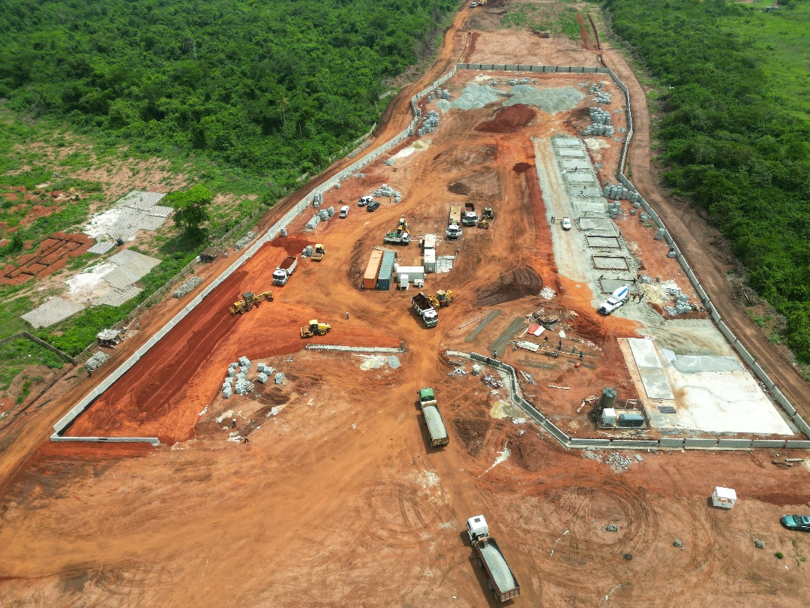

This version makes the logo a fixed brand anchor and lets the rest of the page move around it through project-led blocks.
Option 3 · Editorial Grid
A more layered landing page for a company that wants to look active, not static.
Option 3 uses a more editorial arrangement with stacked proof panels and a denser first screen. It fits a company that wants the homepage to feel active, current, and visually engaged.
Static logo presentation
Sky-blue accent system
Cleaned corporate data

Karameh City Industrial
The updated industrial image remains in the cleaned site package and becomes a priority tile in this layout.

Gastech CNG Mother Station
A second proof block reinforces that the site is not just concept-led; it includes real infrastructure work.